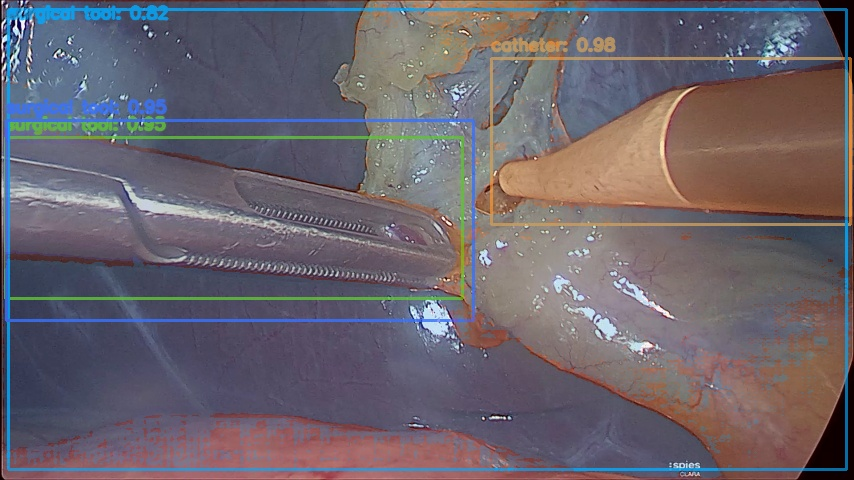
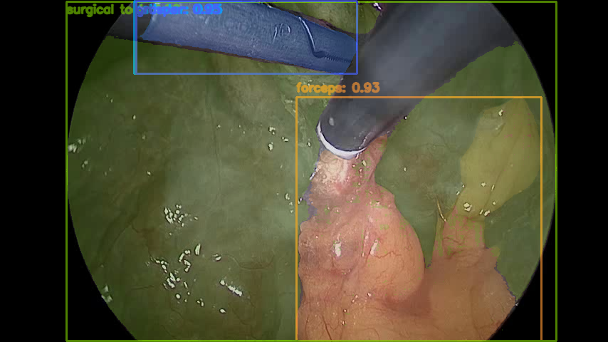
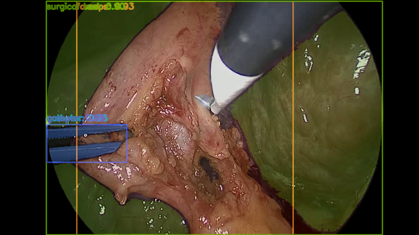
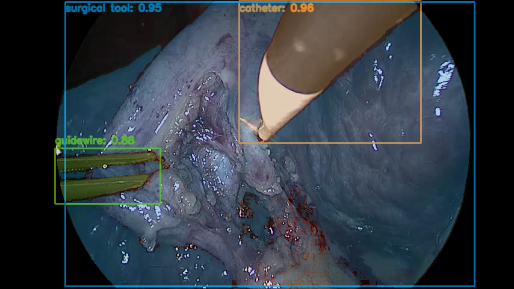

Pipeline
The repository implements an inference-first surgical tool pipeline on real endoscopy data only. A text prompt grounds candidate tools, SAM2 refines masks, and the same objects are propagated through video.
Prompt Grounding
Text prompts such as forceps, grasper, catheter, and guidewire are grounded into tool proposals.
Mask Refinement
SAM2 converts tool boxes into image masks so the output is usable for segmentation-style evaluation instead of box-only inspection.
Video Tracking
Seed detections from the first frame are propagated through a real Endoscapes frame sequence with optional periodic re-grounding.
Real-Data Evaluation
The code reports box mAP, segmentation mAP, mask IoU, throughput, and saved failure cases on real datasets rather than synthetic splits.
Current Results
These numbers come from tracked local runs in this repository on real Endoscapes data. The evaluation result shown here is a bounded tool-only subset smoke run, not a full benchmark claim.
| Run | bbox mAP | bbox mAP@50 | segm mAP | mean mask IoU | FPS |
|---|---|---|---|---|---|
| Endoscapes tool subset | 0.2139 | 0.2492 | 0.0990 | 0.3926 | 2.1140 |
| Video tracking | - | - | - | - | 5.3907 |
| Video re-grounding every 30 frames | - | - | - | - | 5.5816 |
Real inputs used here: one Endoscapes frame, a 120-frame Endoscapes sequence video, and a 9-image tool-only Endoscapes subset for class-aware evaluation.
Figures
Lightweight tracked artifacts from the real runs.




Tracked Files
Publishable artifacts committed for the GitHub Pages site.
Notes
The repository avoids synthetic data. The current environment uses a Transformers-hosted Grounding DINO fallback because the native custom CUDA extension is not available on this machine.
SAM2 tracking completed successfully in this environment, but its optional compiled post-processing extension is also absent.